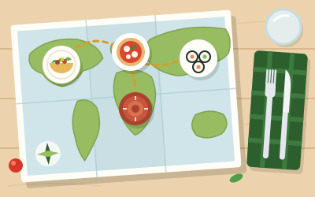
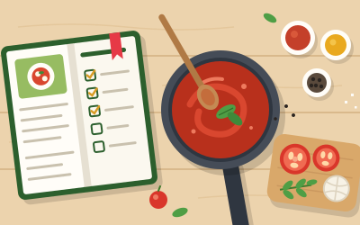

À la carte
Partez à la découverte des cuisines du monde : sélectionnez un pays sur la carte et explorez toutes ses recettes emblématiques. Une façon visuelle et intuitive de voyager.
Voir la carte →Le monde dans votre assiette
Voyagez d’un pays à l’autre sur notre carte gourmande, trouvez une recette avec ce qu’il reste dans votre frigo et découvrez les plats préférés de la communauté.

Partez à la découverte des cuisines du monde : sélectionnez un pays sur la carte et explorez toutes ses recettes emblématiques. Une façon visuelle et intuitive de voyager.
Voir la carte →
Vous avez une idée précise ? Utilisez la recherche et les filtres par pays, difficulté, temps de préparation, budget ou régime végétarien pour trouver exactement ce que vous cherchez.
Voir toutes les recettes →Pas d'inspiration ? Découvrez les recettes les plus appréciées par nos visiteurs — les classiques incontournables du monde entier, plébiscités par la communauté.
Voir le classement →5 pays, 5 plats emblématiques, sélectionnés au hasard pour vous faire voyager